- Brandschutz
- Eingabeplanung
- Tragwerksplanung
- Wärmeschutz
Zudem wurde ein Onlineshop umgesetzt, in welchem aktuelle Angebote und Dienstleistungen bequem von Zuhause oder Unterwegs gekauft oder gebucht werden können.
Zudem wurde ein Onlineshop umgesetzt, in welchem aktuelle Angebote und Dienstleistungen bequem von Zuhause oder Unterwegs gekauft oder gebucht werden können.
Wie bereits erwähnt ist der Zweck der Onlinepräsenz, den Gästen und Kunden einen Einblick in die Dienstleistungen des Ingenieurbüros zu vermitteln.
Der Administrator kann Accounts löschen.
Gäste können sich registrieren und anmelden um Produkte und Diensleistungen zu ordern. Zudem kann ein User seine Daten ändern und soll später ein neues Passwort anfordern können.
Wichtig! Für die Umsetzung der "neues Passwort anfordern" und der Kontaktaufnahme funktion ist unweigerlich ein Email-Server von nöten. Dies wurde jedoch im Rahmen dieser Projektarbeit nicht umgesetzt.
Beispielsweise gefiel uns und unserem Auftraggeber der Webauftritt von Firma Geologie Veith besonders gut; https://www.geologie-veith.de
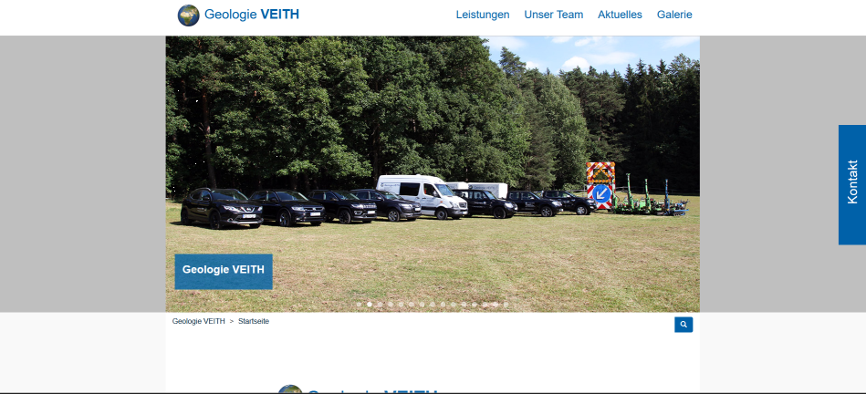
Wir fanden die gesamte Struktur der Seite sehr interessant und vor allem hat uns die Slideshow auf der Landingpage inspiriert. Wir haben diese inspiration genommen und sie in ähnlicher form umgesetzt.
Auch fanden wir den Footer dieser Webseite sehr interessant, vor allem die hat uns die Karte zum Firmensitz beeindruckt.
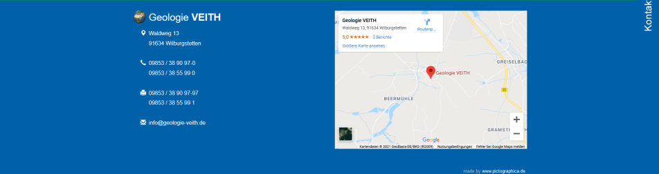
Auf der Homepage der Umweltbank fanden wir ein schöne möglichkeit Artikel in mobilen Ansichten darzustellen. Zudem gefiel uns das schlichte Design der Homepage, Weiß und eine Kontrastfarbe, auch dies floss in unsre Designentscheidung ein; https://www.umweltbank.de/
Auf der Homepage der ava.consult haben uns besonders die Bilder in Kreiselementen, was wir beispielsweise für die Darstellung der Zertifikate auf
unserer Landingpage verwendet haben;
https://www.awaconsult.com/
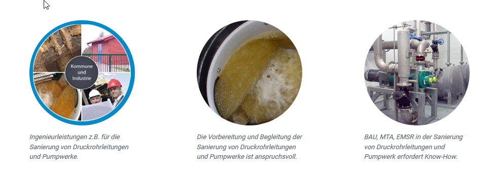
Nach anfänglichen Problemen in Sachen Design, wurde uns schnell bewusst, dass wir für uns unpassende Methoden verwendeten um das Aussehen zu visualisieren. Da wir sehr kommunikative Personen sind, wurde das Design meist on the fly, direkt im Code geändert und Perfektioniert. Das Erstellen von Mockups legten wir sehr schnell ab und konzentrierten uns auf den wesentlichen Prozess.
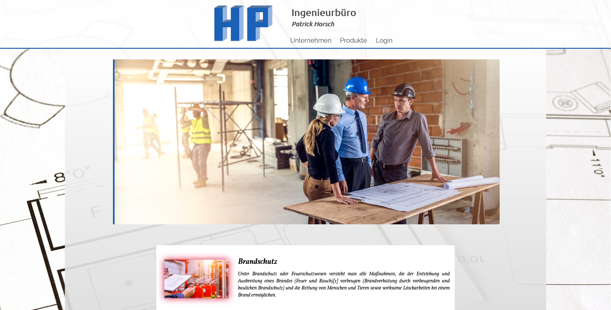
Startseite in der Browseransicht

Startseite in der mobilen Ansicht
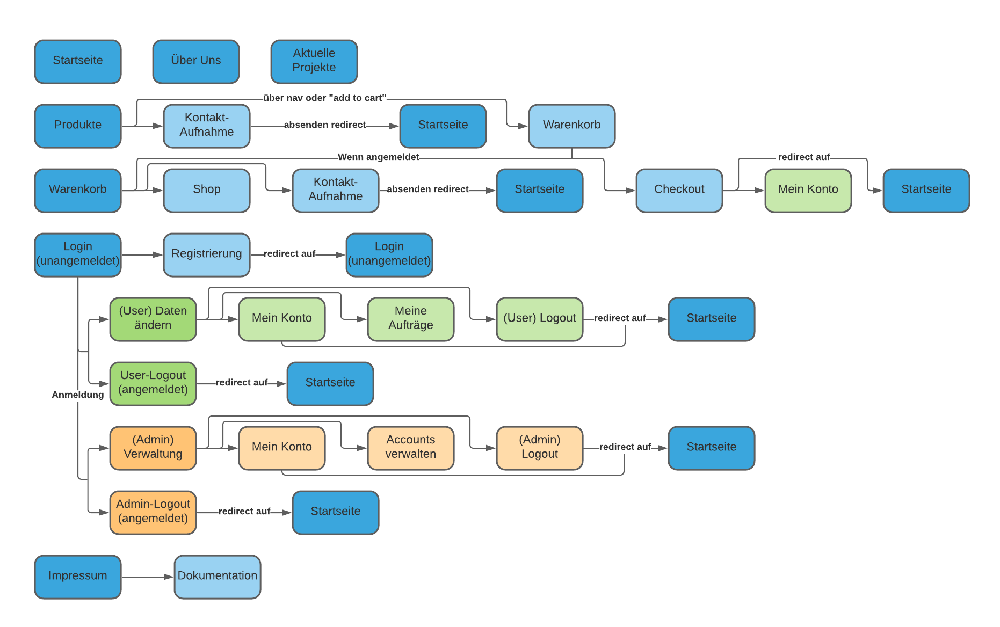
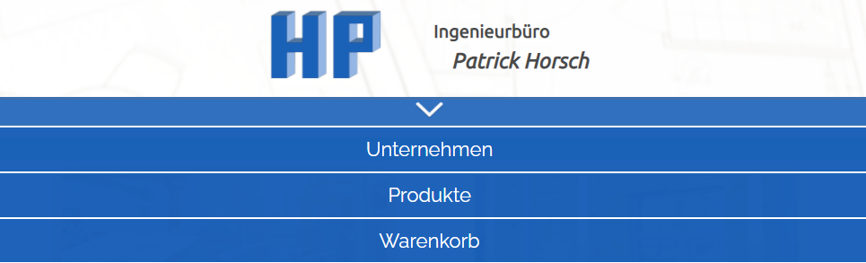
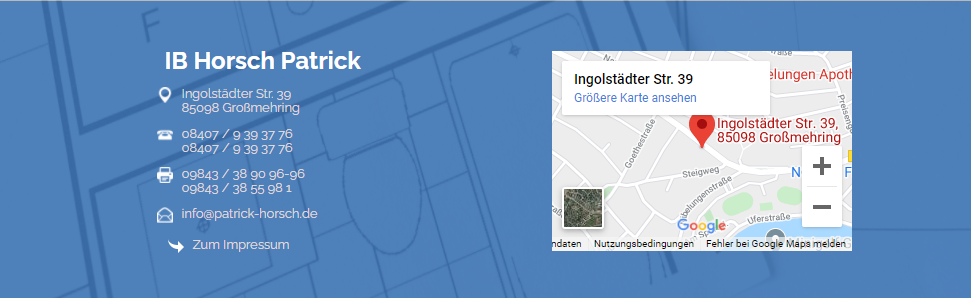
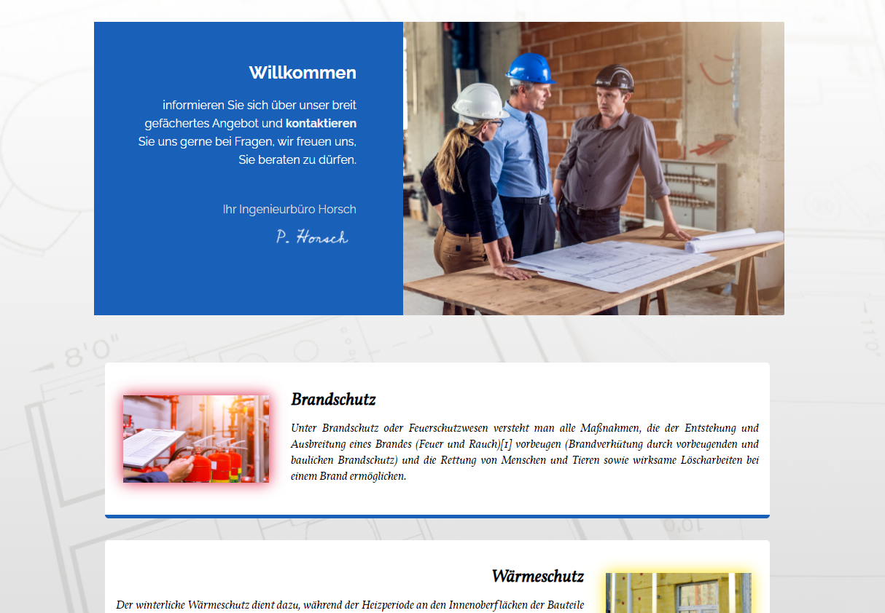
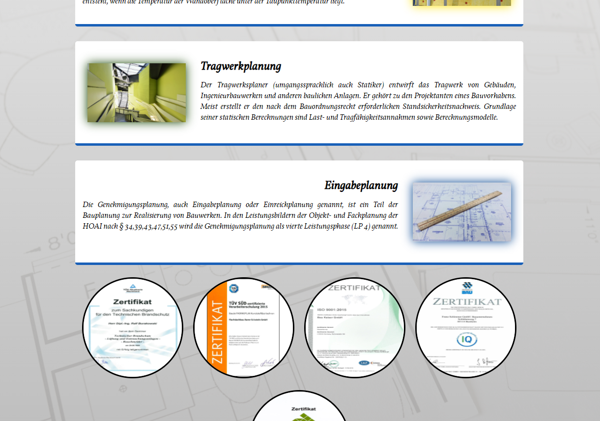
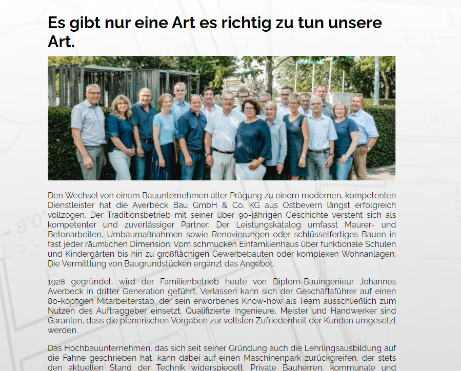
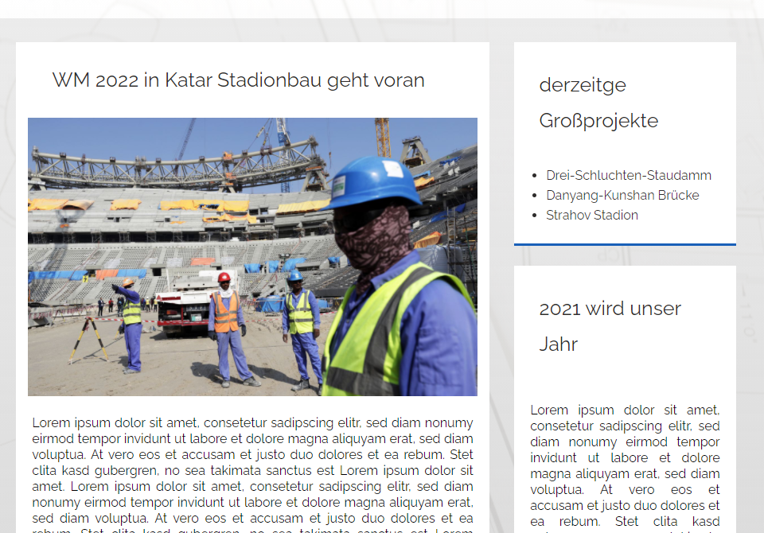
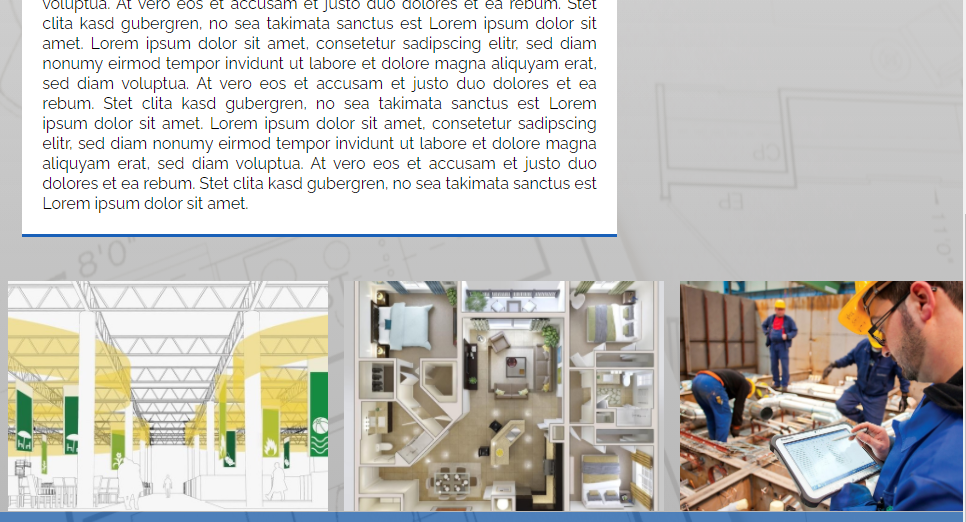
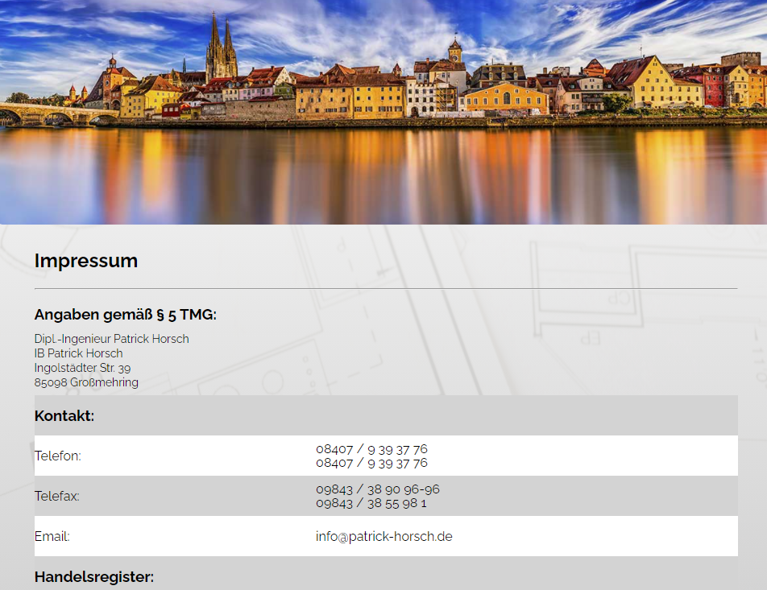
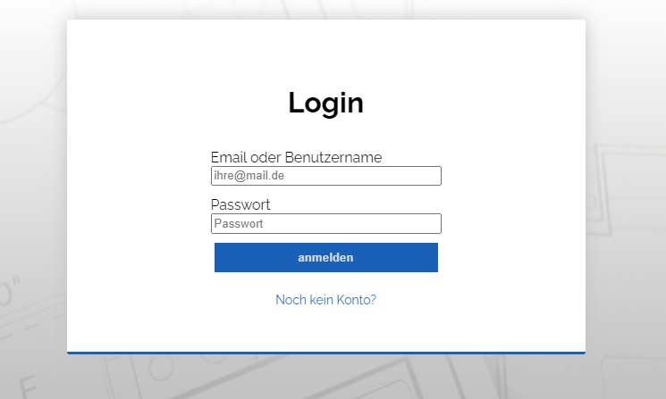
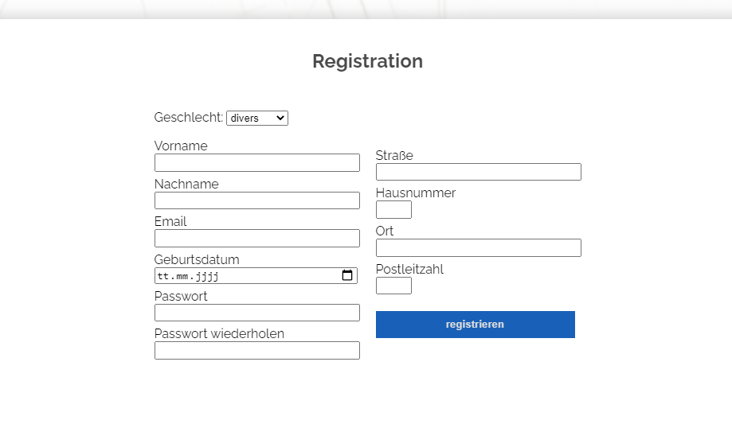
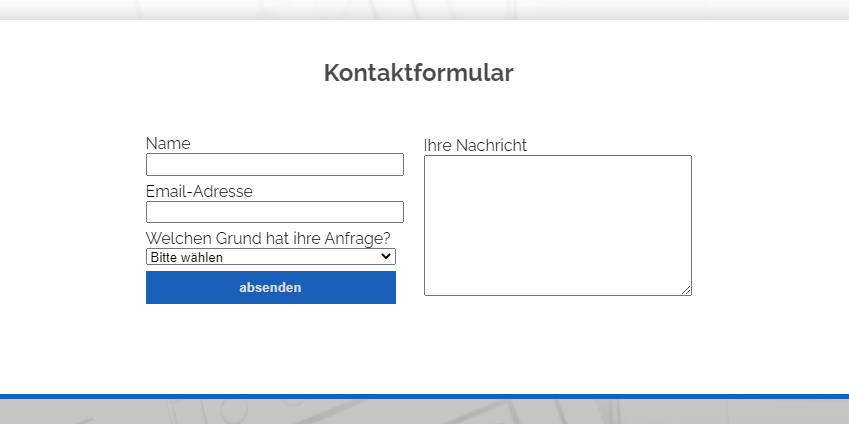
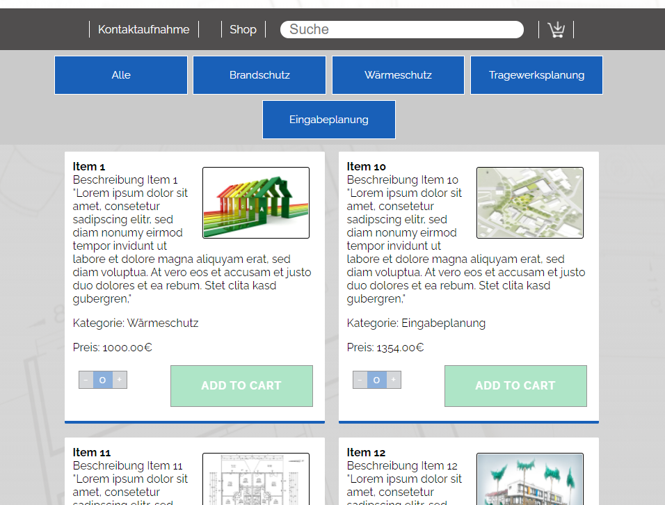
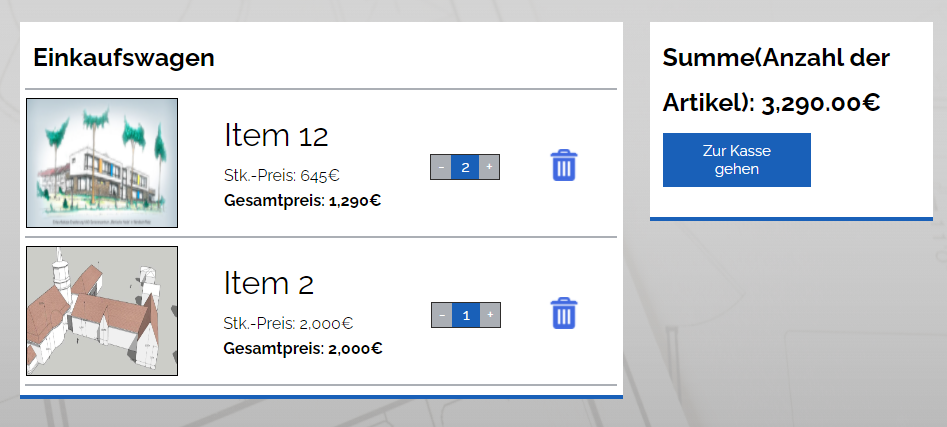


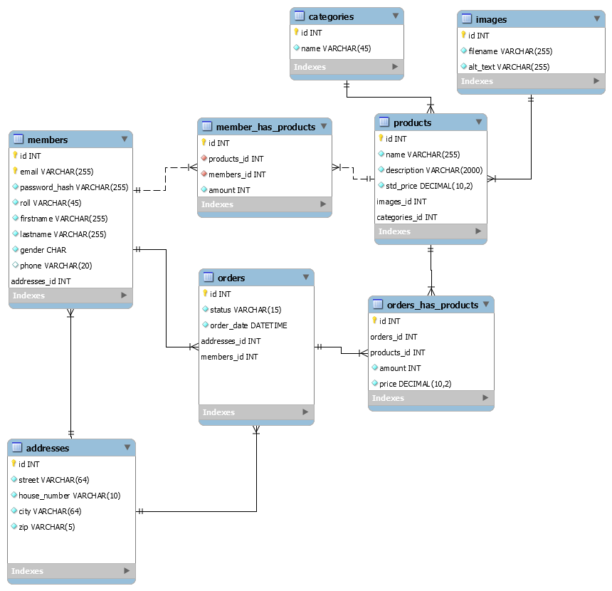
Die Tabelle members beinhaltet die Informationen aller angemeldeten Benutzer, die Rolle des Benutzers, sowie einen Verweis auf die Adresse des Benutzers.
| Attribut | Typ | Länge | Notwendigkeit | Bedingung | Anmerkung |
|---|---|---|---|---|---|
| id | int | - | Ja | PK, AI | |
| varchar | 255 | Ja | PK | ||
| password_hash | varchar | 255 | Ja | ||
| roll | varchar | 45 | Ja | ||
| firstname | varchar | 255 | Ja | ||
| lastname | varchar | 255 | Ja | ||
| gender | char | - | Ja | ||
| phone | varchar | 20 | Nein | ||
| addresses_id | int | - | Ja | PK |
Die Tabelle "addresses" wird dafür genutzt, die Adressen der verschiedenen Nutzer zu speichern.
| Attribut | Typ | Länge | Notwendigkeit | Bedingung | Anmerkung |
|---|---|---|---|---|---|
| id | int | - | Ja | PK, AI | |
| street | varchar | 64 | Ja | ||
| house number | varchar | 10 | Ja | ||
| city | varchar | 64 | Ja | ||
| zip | varchar | 5 | Ja |
Die Tabelle "orders" beinhaltet informationen zum Bestellstatus sowie des Bestelldatums. Hintelegt sind hierfür noch die Adress- sowie Nutzer-ID des Kunden.
| Attribut | Typ | Länge | Notwendigkeit | Bedingung | Anmerkung |
|---|---|---|---|---|---|
| id | int | - | Ja | PK, AI | |
| status | varchar | 15 | Ja | ||
| order date | datetime | 15 | Ja | ||
| addresses_id | int | - | Ja | PK | |
| members_id | int | - | Ja | PK |
Die Tabelle "member_has_products" fungiert als Warenkorb in unserer Datenbank und wird daher für die Zuordnung der vom Kunden ausgewählten Artikel, mittles NutzerID und ProduktID zum jeweiligen Kunden genutzt. Sie enthält außerdem die Bestellmenge des Artikel.
| Attribut | Typ | Länge | Notwendigkeit | Bedingung | Anmerkung |
|---|---|---|---|---|---|
| id | int | - | Ja | PK, AI | |
| addresses_id | int | - | Ja | ||
| members_id | int | - | Ja |
Die Tabelle "products" beinhaltet Informationen für die Produkte, sowie Verweise auf die Tabellen "images" und "categories".
| Attribut | Typ | Länge | Notwendigkeit | Bedingung | Anmerkung |
|---|---|---|---|---|---|
| id | int | - | Ja | PK, AI | |
| name | varchar | 255 | Ja | ||
| description | varchar | 2000 | Ja | ||
| std_price | decimal | 10,2 | Ja | ||
| images_id | int | - | Ja | PK | |
| categories_id | int | - | Ja | PK |
Die Tabelle "orders_has_products" dient als Verknüpfungstabelle zur Rechnungserstellung.
| Attribut | Typ | Länge | Notwendigkeit | Bedingung | Anmerkung |
|---|---|---|---|---|---|
| id | int | - | Ja | PK, AI | |
| orders_id | int | - | Ja | PK | |
| products_id | int | - | Ja | PK | |
| amount | int | - | Ja | ||
| price | decimal | 10,2 | Ja |
Die Tabelle "categories" beinhaltet die Information zur Art des Produktes welche eine der folgenden entspricht: Wärmeschutz, Feuerschutz, Tragwerksplanung und Eingabeplanung/p>
| Attribut | Typ | Länge | Notwendigkeit | Bedingung | Anmerkung |
|---|---|---|---|---|---|
| id | int | - | Ja | PK, AI | |
| name | varchar | 45 | Ja | unique |
Die Tabelle "images" dient zur Zuordnung der Bilder zum jeweiligen Produkt und beinhaltet den Dateinamen des Artikels, sowie einen "alt_text" zur scriptlosen Darstellung.
| Attribut | Typ | Länge | Notwendigkeit | Bedingung | Anmerkung |
|---|---|---|---|---|---|
| id | int | - | Ja | PK, AI | |
| filename | varchar | 255 | Ja | unique | |
| alt_text | varchar | 255 | Ja |
Für das Projekt wurden 3 verschiedene Rollen berücksichtigt hierzu zahlen:
Die nachfolgenden Use-Cases sollen zur Verdeutlichung der jeweiligen Szenarien beitragen

Abbildung: Business Use Case
.png)
Abbildung: Warenkorb verwalten
.png)
Abbildung: Konto verwalten
.png)
Abbildung: Account erstellen
.png)
Abbildung: Anmelden
.png)
Abbildung: Accounts verwalten
Da in unserer Zusammenarbeit verschiedene Browser zum darstellen der Website benutzt wurden, sind relativ früh kleinere Unterschiede aufgetaucht die sich jedoch einfach beheben ließen indem wir die Standardeinstellung der einzelnen Elemente weiter eingegrenzt hatten (benutzt wurden Chrome, Firefox und Microsoft Edge).
Bei einem Endgerät war es nicht möglich das Impressum zu laden (selbst bei vollständiger Funktion aller anderen Seiten). Leider konnte dieses Problem auch nach mehrmaligen durchsehen der html, sowie der css nicht identifiziert und damit auch nicht behoben werden.
Eine größere Schwierigkeit stellte die Umsetzung des responsiven Designs dar, da wir mit der Desktop Variante anfingen. Aber nach einiger Zeit und mit viel Geduld gelang uns auch dies zu unserer Zufriedenheit umzusetzen.
Das größte Problem während unseres Projekts entstand knapp nach der Hälfte der Zeit, bei der uns nach mehreren Rücksprachen mit den zuständigen Professoren klar wurde, dass unsere Seite nicht den Maßstab der Projektarbeit entspricht und wir dadurch gezwungen waren noch einmal ein Großteil unserer Ideen und Vorstellung zu verwerfen. An diesem Punkt brachen wir auch die Zusammenarbeit mit dem Inhaber der Firma IBHorsch ab, um uns vollständig auf die Umsetzung der wesentlichen Aspekte zu konzentrieren, hierunter zählte vor allem die Implementierung und den Ausbau des Shops.
Keine feste Seitenhierarchie bis beinahe zum letzten drittel des Projekts, führte zu einer gewissen Unordnung was sowohl die Benennung der Dateien und Elemente, als auch die Ordnerstruktur angeht. Doch nach festlegen der bestehenden Seiten und das Entfernen der überflüssigen Seiten war dies auch schnell in den Griff zu bekommen.
Anfängliche Probleme gab es bei der Nutzung von der main Branch als einziger Branch, da dies mehr als einmal zu Merge Konflikten führte, dies ließ sich jedoch leicht durch die Nutzung verschiedener Branches regeln.
Es stellte sich als Vorteil heraus, eine klare Aufgabenteilung durchzuführen wodurch jeder sein Fachgebiet besaß und es ihm möglich war, anschließend die jeweiligen anderen in seine Arbeit einzuführen und Verständisfragen zu klären. Dadurch gelang es uns Arbeit durch eigen Expertise schnell zu erledigen, sich dabei nicht gegenseitig zu behindern und dennoch ein umfassendes Wissen der gesamten Thematik zu erschließen.
Zur Aufgabenstrukturierung entschieden wir uns für Trello, da es die Möglichkeit besaß uns selbst Termine und Fristen zu setzen an die wir uns größtenteils hielten, bzw. es zu ersehen war, wenn es zu Schwierigkeiten kam. So gelang es uns, in dem Projekt einen Überblick zu behalten nicht nur was eigene Aufgaben anging, sondern auch die der Teammitglieder, um evtl. benötigete Hilfe anbieten zu können.